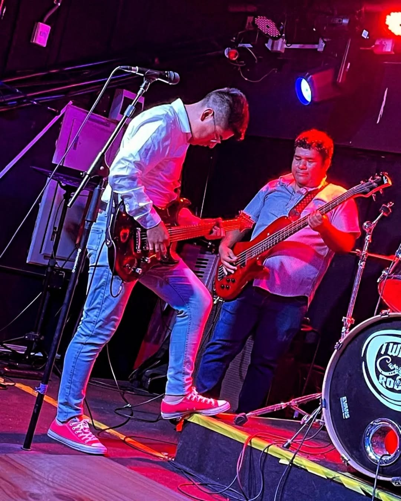
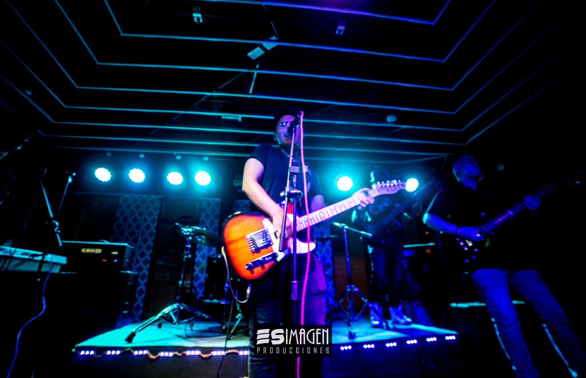
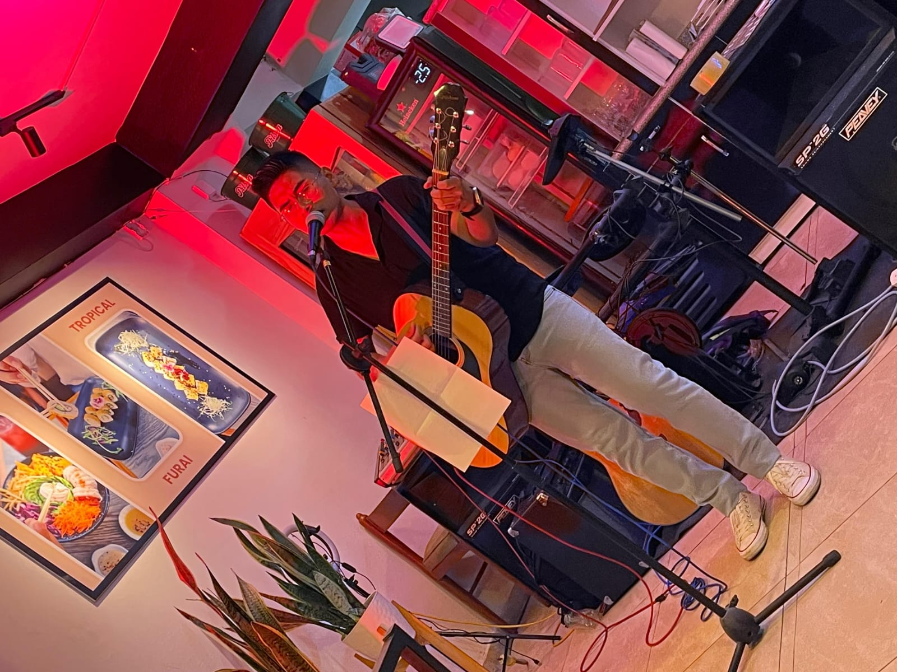

Perú



Aquella noche de setiembre, fuiste tan buena para mí... hasta dolerme! Yo no sé lo demás; y para eso, no debiste ser buena, no debiste. Aquella noche sollozaste al verme hermético y tirano, enfermo y triste. Yo no sé lo demás... y para eso, yo no sé por qué fui triste... tan triste...! Solo esa noche de setiembre dulce, tuve a tus ojos de Magdala, toda la distancia de Dios... y te fui dulce! Y también fue una tarde de setiembre cuando sembré en tus brasas, desde un auto, los charcos de esta noche de diciembre.